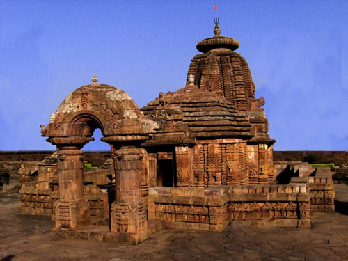

It is one of the oldest temples in Odisha and all the more awesome for it. Parsurameswar, a Shiva temple in Bhubaneshwar, is considered the best preserved specimen of an early Orissan Hindu temple, and one of the oldest in the state, dated to the Sailodbhava period between the 7th and 8th centuries. The temple is believed to have been in 650 AD in Nagara style. The temple is the first among Bhubaneswar temples to have depiction of Saptamatrikas images, namely, Chamunda, Varahi, Indrani, Vaisnavi, Kaumari, Sivani and Brahmi. The temple has amazing sculpted work that gives a idea of the times. Lakulisa is sculpted in Buddha-like form, with four disciples at his feet, while on the West, above the relief of Nataraja, he looks like the meditating Buddha. There are also vivid sculpted forms of amorous couples, wonderfully animated bands of dancers and musicians, animal figures and mythological narratives, apart from busts of Shiva. There is a major festival, Parasurashtami, the celebrated in the temple every year in June–July.
